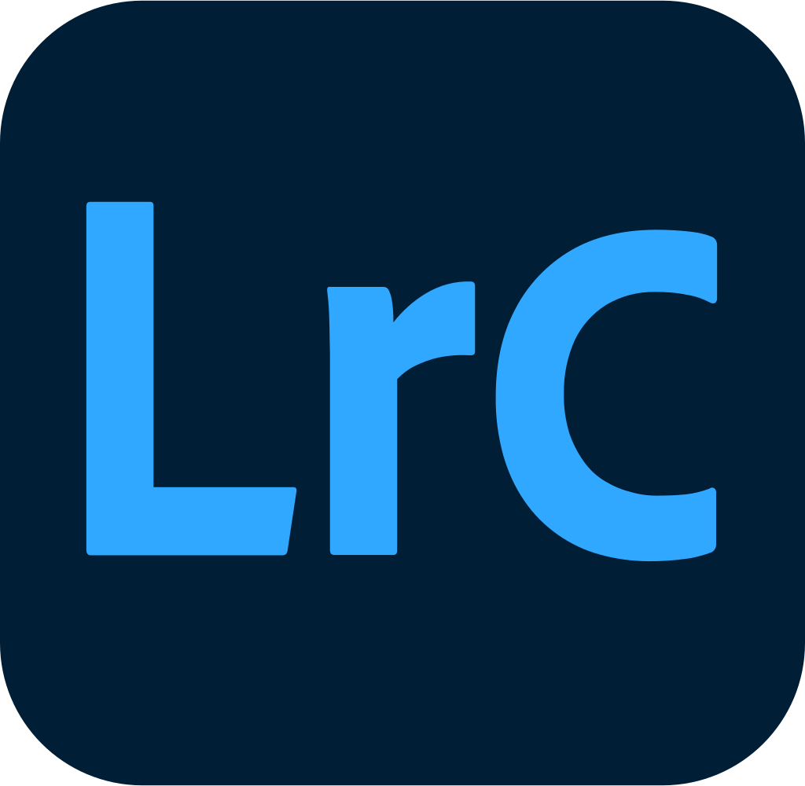
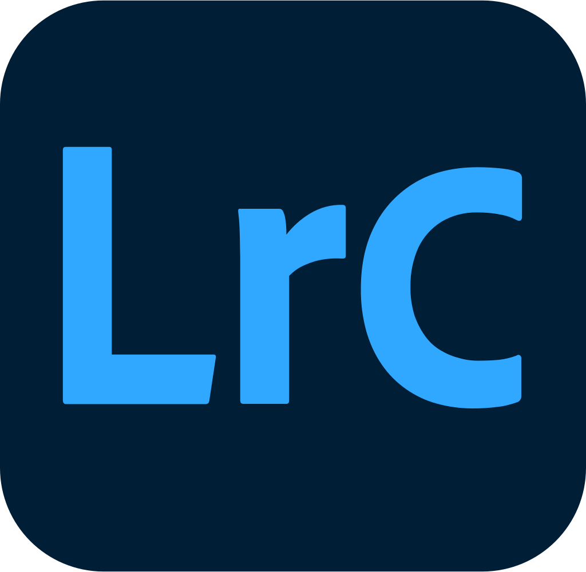

Freja Cen Yun Gunnarsson
En lille introduktion...
Mit navn er Freja. Jeg er en 21-årig pige, der oprindeligt kommer fra Vestsjælland, men er i forbindelse med studiet flyttet til Odense. Jeg studerer lige nu til multimediedesigner, hvorfra jeg har stiftet bekendskab med Adobe-programmerne, HTML og CSS.
Jeg ELSKER at udfolde mig kreativt! Alt fra at tegne, skrive, madlavning, redigering af videoer, fotografere. Jeg har altid elsket at være kreativ, og ligeså langt tilbage som jeg kan huske, har kreativitet bare fanget min opmærksomhed allermest. Jeg er altid gået helhjertet ind i mine projekter, og det vil typsik også kunne ses på resultatet af mine værker.


 
